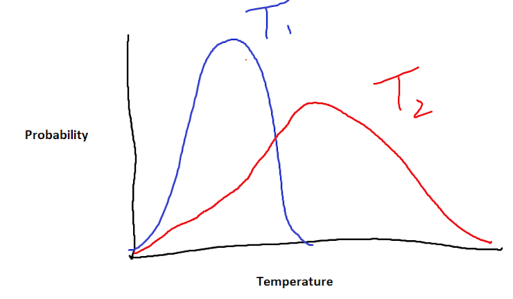

Based on content taught by Xiaocheng Jiang, Qiaobing Xu, and Huan-Hsuan Hsu in Spring 2021.
1. The statement that energy can be neither created nor destroyed is a statement of the _____ law of thermodynamics.
2. State functions are independent of path, but path functions are not. Which of the following is a path function?
3. You have no air conditioner, and all your fans broke (somehow). You decide to open the door of the refrigerator instead. What happens to the temperature of the room (assuming that the room is closed off from the surroundings)?
4. Which of the following is true for an isothermal process for an ideal gas?
5. Below is an attempt at displaying the Boltzmann Distribution curves for molecules at two different temperatures, where \(T_2 > T_1\). Is this depiction accurate?
6. Energy for molecules is generally evenly distributed among their degrees of freedom. An ideal monoatomic gas has how many degrees of freedom?
7. The secondary structure of a protein is stabilized by...
8. The Carnot cycle is composed of which two types of processes?
9. A process that results in a decrease in entropy of the universe is...
10. How many ways are there to put 1 particle of type A and 2 particles of type B into a container with 4 total boxes (each box can fit a maximum of one particle)?
11. The total multiplicity of a system is the _____ of the positional and energy multiplicity; the total entropy of a system is the _____ of the positional and energy entropy.
12. The entropy of a perfect crystal of an impure substance at 0 K is...
If multiple answers are correct, select the one that is the most specific.
13. Based on the thermodynamic definition of temperature, the reciprocal of temperature is the rate of change of _____ with respect to _____.
14. The Gibb's free energy equation only considers boundary work and assumes what conditions?
15. Hydrophobic interactions between the hydrophobic tails of phospholipids are important for the stabilization of the cell membrane. Such interactions are primarily driven by...